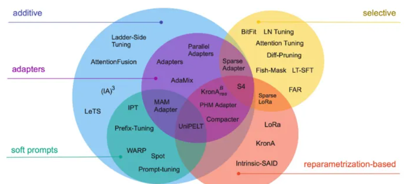

背景
随着模型的参数越来越大，为每一个任务从头训练一个模型越来越困难，而参数量的增大也让模型理解了更深层的语义信息。随着BERT的出现，预训练+微调的方式走上历史舞台。
为什么不选择全参数微调呢？最主要的原因还是成本太高，在消费级硬件上愈发困难。以GPT2-1.5B为例，若参数与梯度以fp16保存，显存需要保存3+3 = 6B的数据，若使用Adam优化器，那么还需要保存fp32的模型参数备份，momentum与variance，又需要6+6+6 = 18G，总共需要24G。再加上其他状态，如activation，buffer，还有显存碎片无法利用，实际上需要的显存是大于24G的。
全参数微调还有一个问题，当LLM尝试学习多个连续任务时，容易忘记之前学到的东西，也就是“灾难性遗忘”。如何在保留先前知识的基础上增量地增强LLM，即进行持续学习，至关重要。简单来说，全量微调有overfitting，灾难性遗忘，成本高的问题。因此，高效微调模型的参数就成了一个新方向，PEFT(Parameter-Efficient Fine-tuning)应运而生。
微调一般只更改模型的部分参数，调整哪些参数，如何调整则对应了不同方法。一般从下游任务出发，来决定下游应该如何添加参数。
下面我们以transformers库中的BERT为例。我们都知道，BERT的预训练是MLM与NSP，所以下游任务自然有这两者，也就是下一句预测和完形填空。所以这才应该是BERT的原生下游任务。
首先看NSP，模型的结构如下：
# assert logits[0, 0] < logits[0, 1] # next sentence was random
class BertForNextSentencePrediction(BertPreTrainedModel):
def __init__(self, config):
super().__init__(config)
self.bert = BertModel(config)
self.cls = BertOnlyNSPHead(config)
# Initialize weights and apply final processing
self.post_init()
class BertOnlyNSPHead(nn.Module):
def __init__(self, config):
super().__init__()
self.seq_relationship = nn.Linear(config.hidden_size, 2)
def forward(self, pooled_output):
seq_relationship_score = self.seq_relationship(pooled_output)
return seq_relationship_score 可以看到，对于NSP任务，就是在Model的后面拼一个Linear层，将768维映射到2维，本质上是一个二分类问题。
再看SequenceClassification任务，也就是序列分类。实际上也是在最后填充了一层Linear层用于分类。与NSP的区别在于pooler层会先经过一次dropout，dropout的概率可以在config中设置，默认为0.1。
class BertForSequenceClassification(BertPreTrainedModel):
def __init__(self, config):
super().__init__(config)
self.num_labels = config.num_labels
self.config = config
self.bert = BertModel(config)
classifier_dropout = (
config.classifier_dropout if config.classifier_dropout is not None else config.hidden_dropout_prob
)
self.dropout = nn.Dropout(classifier_dropout)
self.classifier = nn.Linear(config.hidden_size, config.num_labels) 
PEFT按核心思想可以分为三类：
- 添加一些参数量小的层，只微调这些层，最典型的就是LST。
- 选择某些层，或层中的某一部分进行微调，最典型的是BitFit，只对bias进行微调。
- 重参数化，也算是增加一部分参数，但最后加回原参数的对应部分
Freeze
冻结某些参数是最容易想到的方法，仅仅调整某些未被冻结的参数就可以减少大量显存占用，但freeze方法大大降低了模型的灵活性。
for name ,param in model.parameters():
if not any (n in name for n in [layers_name1,layer_name2...])
param.requires_grad = FalseBitfit
出自BitFit: Simple Parameter-efficient Fine-tuning or Transformer-based Masked Language-models。
pass
Prompt-tuning
pass
Lora
原理
在原始权重中并上一个旁路的分支，以Linear层为例子，原本\(h = W_{d×k}X\)，\(W\)是权重，旁路有两个低秩的矩阵，其中\(A_{r×k} = N(0,σ^2)\)，也就是以高斯分布初始化，而\(B_{d×r}\)矩阵则以全0初始化，其中维度r远小于d和k。\(ΔW = BA\) ,最终的权重为$W+ΔW \(。对于\)ΔW\(可以使用一个α参数来控制倍数，即\)W+ΔW$。B为升维矩阵，A为降维矩阵。实际上，LoRA一般用于Dense层。
对于梯度计算，借用知乎上CodeLearner答主的一张图。

所以，在微调时，某一Lora层反向传播中的梯度计算量是要更多的，但由于r远小于原权重的维度d和k，所以相对于全量微调保存的梯度值就少。同时，原论文中也只对Transformer Block中的Q,K,V进行了Lora处理。若r等于k，那么此时可以等价于全参数微调。
对于初始化问题，首先，我们需要保证最开始的\(ΔW=0\)，所以需要AB的其中一者为0。其次，我们看上图带上LoRA后的反向传播梯度计算，若A为0，那么梯度就会一直为0，\(ΔW\)就不会更新。
原文中提到了LoRA的Limitation，如果选择将A和B矩阵吸收(合并)到W原始权重矩阵中,以消除额外的推理延迟,那么在单个前向传递中为不同任务的不同A和B批量输入数据就变得不直观了。我想原文的意思是一个batch里可能有不同的任务，那么不同的任务应该用不同的权重，那么最好是不将\(ΔW\)合并到原始权重，针对不同任务来动态选择\(ΔW\)，这需要在推理速度上做取舍。
源码速读
为了方便理解，我们从peft0.10.0的官方示例出发。
from transformers import AutoModelForSeq2SeqLM
from peft import get_peft_config, get_peft_model, LoraConfig, TaskType
model_name_or_path = "bigscience/mt0-large"
tokenizer_name_or_path = "bigscience/mt0-large"
peft_config = LoraConfig(
task_type=TaskType.SEQ_2_SEQ_LM, inference_mode=False, r=8, lora_alpha=32, lora_dropout=0.1
)
model = AutoModelForSeq2SeqLM.from_pretrained(model_name_or_path)
#等价于 model = PeftModelForSeq2SeqLM(model,peft_config)
#也等价于model = lora_model = LoraModel(model, config, "default")
model = get_peft_model(model, peft_config)
model.print_trainable_parameters()
"trainable params: 2359296 || all params: 1231940608 || trainable%: 0.19151053100118282" 首先从LoraConfig出发，这里的task_type是PeftConfig的参数，其余则是LoraConfig的参数，这些参数在上文的原理中都有提到。主要还是根据不同的下游任务返回不同的模型。这里也可以直接用get_peft_config函数来读取。
peft_config = LoraConfig(
task_type=TaskType.SEQ_2_SEQ_LM, inference_mode=False, r=8, lora_alpha=32, lora_dropout=0.1
)
----
config = {
"task_type":"SEQ_2_SEQ_LM",
"peft_type":"LORA",
"inference_mode":False,
"r":8,
"lora_alpha":32,
"lora_dropout":0.1
}
another_config = get_peft_config(config)get_peft_model
接下来看get_peft_model。传入的参数有模型和对应的config，最后会返回一个PeftModel实例。返回的实例类型会根据传入的config来确定。
model = get_peft_model(model, peft_config)
---------mapping.py----------------
def get_peft_model(
model: PreTrainedModel, peft_config: PeftConfig, adapter_name: str = "default", mixed: bool = False
) -> PeftModel | PeftMixedModel:
"""
Returns a Peft model object from a model and a config.
Args:
model ([`transformers.PreTrainedModel`]):
Model to be wrapped.
peft_config ([`PeftConfig`]):
Configuration object containing the parameters of the Peft model.
adapter_name (`str`, `optional`, defaults to `"default"`):
The name of the adapter to be injected, if not provided, the default adapter name is used ("default").
mixed (`bool`, `optional`, defaults to `False`):
Whether to allow mixing different (compatible) adapter types.
"""
model_config = getattr(model, "config", {"model_type": "custom"})
if hasattr(model_config, "to_dict"):
model_config = model_config.to_dict()
peft_config.base_model_name_or_path = model.__dict__.get("name_or_path", None)
if mixed:
return PeftMixedModel(model, peft_config, adapter_name=adapter_name)
if peft_config.task_type not in MODEL_TYPE_TO_PEFT_MODEL_MAPPING.keys() and not peft_config.is_prompt_learning:
return PeftModel(model, peft_config, adapter_name=adapter_name)
if peft_config.is_prompt_learning:
peft_config = _prepare_prompt_learning_config(peft_config, model_config)
return MODEL_TYPE_TO_PEFT_MODEL_MAPPING[peft_config.task_type](model, peft_config, adapter_name=adapter_name)
----------------------
MODEL_TYPE_TO_PEFT_MODEL_MAPPING: dict[str, PeftModel] = {
"SEQ_CLS": PeftModelForSequenceClassification,
"SEQ_2_SEQ_LM": PeftModelForSeq2SeqLM,
"CAUSAL_LM": PeftModelForCausalLM,
"TOKEN_CLS": PeftModelForTokenClassification,
"QUESTION_ANS": PeftModelForQuestionAnswering,
"FEATURE_EXTRACTION": PeftModelForFeatureExtraction,
}
关键在于这两句。如果任务类型不在支持的特定任务中，返回PeftModel，否则返回对应任务类型的Model，这些Model继承了PeftModel。若是提示学习类型的，如prompt-tuning，则需要额外的config信息，如隐藏层的数量,可能的键包括num_hidden_layers、num_layers、n_layer，
如果无法找到,则需要在peft_config中手动指定num_layers，这个参数指定了prompt将被注入到模型的哪些层。还需要注意力的头数，encoder隐藏层的大小和tokenembedding的维度等等。这些参数若从模型的config中找不到，则需要在peftconfig中自行指定。
if peft_config.task_type not in MODEL_TYPE_TO_PEFT_MODEL_MAPPING.keys() and not peft_config.is_prompt_learning:
return PeftModel(model, peft_config, adapter_name=adapter_name)
if peft_config.is_prompt_learning:
peft_config = _prepare_prompt_learning_config(peft_config, model_config)
return MODEL_TYPE_TO_PEFT_MODEL_MAPPING[peft_config.task_type](model, peft_config, adapter_name=adapter_name)
-------------------
def _prepare_prompt_learning_config(peft_config, model_config):
if peft_config.num_layers is None:
if "num_hidden_layers" in model_config:
num_layers = model_config["num_hidden_layers"]
elif "num_layers" in model_config:
num_layers = model_config["num_layers"]
elif "n_layer" in model_config:
num_layers = model_config["n_layer"]
else:
raise ValueError("Please specify `num_layers` in `peft_config`")
peft_config.num_layers = num_layers
if peft_config.token_dim is None:
if "hidden_size" in model_config:
token_dim = model_config["hidden_size"]
elif "n_embd" in model_config:
token_dim = model_config["n_embd"]
elif "d_model" in model_config:
token_dim = model_config["d_model"]
else:
raise ValueError("Please specify `token_dim` in `peft_config`")
peft_config.token_dim = token_dim
if peft_config.num_attention_heads is None:
if "num_attention_heads" in model_config:
num_attention_heads = model_config["num_attention_heads"]
elif "n_head" in model_config:
num_attention_heads = model_config["n_head"]
elif "num_heads" in model_config:
num_attention_heads = model_config["num_heads"]
elif "encoder_attention_heads" in model_config:
num_attention_heads = model_config["encoder_attention_heads"]
else:
raise ValueError("Please specify `num_attention_heads` in `peft_config`")
peft_config.num_attention_heads = num_attention_heads
if getattr(peft_config, "encoder_hidden_size", None) is None:
setattr(peft_config, "encoder_hidden_size", peft_config.token_dim)
return peft_config 回到重点，我们以Seq2SeqModel的代码为例，相对于PeftModel，整体结构一样，只是多了两个参数变量，其中prepare_inputs_for_generation函数需要生成模型在generate方法中自行实现，base_model_prepare_encoder_decoder_kwargs_for_generation变量则从base_model中提取出一些生成时的参数，如是否要使用cache的use_cahe，将encoder的参数封装进model_kwargs返回。
class PeftModelForSeq2SeqLM(PeftModel):
def __init__(self, model: torch.nn.Module, peft_config: PeftConfig, adapter_name: str = "default") -> None:
super().__init__(model, peft_config, adapter_name)
self.base_model_prepare_inputs_for_generation = self.base_model.prepare_inputs_for_generation
self.base_model_prepare_encoder_decoder_kwargs_for_generation = (
self.base_model._prepare_encoder_decoder_kwargs_for_generation
)
PeftModel
还是先贴出整体的初始化源码。
class PeftModel(PushToHubMixin, torch.nn.Module):
def __init__(self, model: PreTrainedModel, peft_config: PeftConfig, adapter_name: str = "default") -> None:
super().__init__()
self.modules_to_save = None
self.active_adapter = adapter_name
self.peft_type = peft_config.peft_type
# These args are special PEFT arguments that users can pass. They need to be removed before passing them to
# forward.
self.special_peft_forward_args = {"adapter_names"}
self._is_prompt_learning = peft_config.is_prompt_learning
if self._is_prompt_learning:
self._peft_config = {adapter_name: peft_config}
self.base_model = model
self.add_adapter(adapter_name, peft_config)
else:
self._peft_config = None
cls = PEFT_TYPE_TO_MODEL_MAPPING[peft_config.peft_type]
self.base_model = cls(model, {adapter_name: peft_config}, adapter_name)
self.set_additional_trainable_modules(peft_config, adapter_name)
if getattr(model, "is_gradient_checkpointing", True):
model = self._prepare_model_for_gradient_checkpointing(model)
# the `pretraining_tp` is set for some models to simulate Tensor Parallelism during inference to avoid
# numerical differences, https://github.com/pytorch/pytorch/issues/76232 - to avoid any unexpected
# behavior we disable that in this line.
if hasattr(self.base_model, "config") and hasattr(self.base_model.config, "pretraining_tp"):
self.base_model.config.pretraining_tp = 1 PeftModel中的源码很大部分服务于提示学习，先不看。我们只看_is_prompt_learning是False的情况。
else:
self._peft_config = None
cls = PEFT_TYPE_TO_MODEL_MAPPING[peft_config.peft_type]
self.base_model = cls(model, {adapter_name: peft_config}, adapter_name)
self.set_additional_trainable_modules(peft_config, adapter_name) 可以看到，cls最终映射到对应peft方案的模型实例，若是LORA，则返回一个LoraModel实例，看来关键就在于LoraModel中。
LoraModel
LoraModel继承了BaseTuner，而BaseTuner继承nn.Module。
class LoraModel(BaseTuner):
prefix: str = "lora_"
def __init__(self, model, config, adapter_name) -> None:
super().__init__(model, config, adapter_name) 由于代码量非常大，所以只贴出核心的代码，这一段是LoRA的核心逻辑。首先判断target是不是Lora层，若是，则根据loraconfig来更新这一层。若不是，则创建一个新的Lora层来替换原来的层。
def _create_and_replace(
self,
lora_config,
adapter_name,
target,
target_name,
parent,
current_key,
):
"""
此处省略部分代码
"""
from peft.tuners.adalora import AdaLoraLayer
if isinstance(target, LoraLayer) and not isinstance(target, AdaLoraLayer):
target.update_layer(
adapter_name,
r,
lora_alpha=alpha,
lora_dropout=lora_config.lora_dropout,
init_lora_weights=lora_config.init_lora_weights,
use_rslora=lora_config.use_rslora,
use_dora=lora_config.use_dora,
)
else:
new_module = self._create_new_module(lora_config, adapter_name, target, **kwargs)
if adapter_name != self.active_adapter:
# adding an additional adapter: it is not automatically trainable
new_module.requires_grad_(False)
self._replace_module(parent, target_name, new_module, target) 下面是update_layer函数的逻辑，首先保证秩大于0，然后创建dropout层。
再创建AB矩阵，可以看到A是降维矩阵，B是升维矩阵。之后初始化这两个矩阵，可以看到A矩阵可以选择kaiming uniform或高斯分布初始化。若是用于Embedding层，那么A初始化为0，B用高斯分布。
def update_layer(
self, adapter_name, r, lora_alpha, lora_dropout, init_lora_weights, use_rslora, use_dora: bool = False
):
# This code works for linear layers, override for other layer types
if r <= 0:
raise ValueError(f"`r` should be a positive integer value but the value passed is {r}")
self.r[adapter_name] = r
self.lora_alpha[adapter_name] = lora_alpha
if lora_dropout > 0.0:
lora_dropout_layer = nn.Dropout(p=lora_dropout)
else:
lora_dropout_layer = nn.Identity()
self.lora_dropout.update(nn.ModuleDict({adapter_name: lora_dropout_layer}))
# Actual trainable parameters
self.lora_A[adapter_name] = nn.Linear(self.in_features, r, bias=False)
self.lora_B[adapter_name] = nn.Linear(r, self.out_features, bias=False)
if use_rslora:
self.scaling[adapter_name] = lora_alpha / math.sqrt(r)
else:
self.scaling[adapter_name] = lora_alpha / r
if init_lora_weights == "loftq":
self.loftq_init(adapter_name)
elif init_lora_weights:
self.reset_lora_parameters(adapter_name, init_lora_weights)
"""
下略
"""
self.set_adapter(self.active_adapters)
-----------------------------------------------------
def reset_lora_parameters(self, adapter_name, init_lora_weights):
if init_lora_weights is False:
return
if adapter_name in self.lora_A.keys():
if init_lora_weights is True:
# initialize A the same way as the default for nn.Linear and B to zero
# https://github.com/microsoft/LoRA/blob/a0a92e0f26c067cf94747bdbf1ce73793fa44d19/loralib/layers.py#L124
nn.init.kaiming_uniform_(self.lora_A[adapter_name].weight, a=math.sqrt(5))
elif init_lora_weights.lower() == "gaussian":
nn.init.normal_(self.lora_A[adapter_name].weight, std=1 / self.r[adapter_name])
else:
raise ValueError(f"Unknown initialization {init_lora_weights=}")
nn.init.zeros_(self.lora_B[adapter_name].weight)
if adapter_name in self.lora_embedding_A.keys():
# initialize a the same way as the default for nn.linear and b to zero
nn.init.zeros_(self.lora_embedding_A[adapter_name])
nn.init.normal_(self.lora_embedding_B[adapter_name])LoraLayer
可以看到layer需要是LoraLayer的实例才会被更新，下面是LoraLayer的代码。最初的peft0.1.0，Lora只能用于Linear层，后来则将一些dense层统一抽象成为了LoraLayer，可以看到有Linear，Embedding，Conv1D和Conv2D。
class LoraLayer(BaseTunerLayer):
# All names of layers that may contain (trainable) adapter weights
adapter_layer_names = ("lora_A", "lora_B", "lora_embedding_A", "lora_embedding_B")
# All names of other parameters that may contain adapter-related parameters
other_param_names = ("r", "lora_alpha", "scaling", "lora_dropout")
def __init__(self, base_layer: nn.Module, **kwargs) -> None:
self.base_layer = base_layer
self.r = {}
self.lora_alpha = {}
self.scaling = {}
self.lora_dropout = nn.ModuleDict({})
self.lora_A = nn.ModuleDict({})
self.lora_B = nn.ModuleDict({})
# For Embedding layer
self.lora_embedding_A = nn.ParameterDict({})
self.lora_embedding_B = nn.ParameterDict({})
# Mark the weight as unmerged
self._disable_adapters = False
self.merged_adapters = []
self.use_dora: dict[str, bool] = {}
self.lora_magnitude_vector: Optional[torch.nn.ParameterDict] = None # for DoRA
self._caches: dict[str, Any] = {}
self.kwargs = kwargs
base_layer = self.get_base_layer()
if isinstance(base_layer, nn.Linear):
in_features, out_features = base_layer.in_features, base_layer.out_features
elif isinstance(base_layer, nn.Conv2d):
in_features, out_features = base_layer.in_channels, base_layer.out_channels
elif isinstance(base_layer, nn.Embedding):
in_features, out_features = base_layer.num_embeddings, base_layer.embedding_dim
elif isinstance(base_layer, Conv1D):
in_features, out_features = (
base_layer.weight.ds_shape if hasattr(base_layer.weight, "ds_shape") else base_layer.weight.shape
)
elif hasattr(base_layer, "infeatures") and hasattr(base_layer, "outfeatures"):
# QuantLinear
in_features, out_features = base_layer.infeatures, base_layer.outfeatures
elif hasattr(base_layer, "input_size") and hasattr(base_layer, "output_size"):
# Megatron ColumnParallelLinear,RowParallelLinear
in_features, out_features = base_layer.input_size, base_layer.output_size
elif hasattr(base_layer, "codebooks") and base_layer.__class__.__name__ == "QuantizedLinear":
# AQLM QuantLinear
in_features, out_features = base_layer.in_features, base_layer.out_features
elif hasattr(base_layer, "w_bit") and base_layer.__class__.__name__ == "WQLinear_GEMM":
# Awq layers
in_features, out_features = base_layer.in_features, base_layer.out_features
else:
raise ValueError(f"Unsupported layer type {type(base_layer)}")
self.in_features = in_features
self.out_features = out_features 在LoraModel中的**_create_new_module**函数中我们也可以看到抛出的异常，应证了当target不是LoraLayer的时候，如果想创建一个新Lora模块将旧模块替换，那么需要原模块是torch.nn.Linear, torch.nn.Embedding, torch.nn.Conv2d, transformers.pytorch_utils.Conv1D这几种类型，最终这几个类在LoraLayer.py中都被重写了。
if new_module is None:
# no module could be matched
raise ValueError(
f"Target module {target} is not supported. Currently, only the following modules are supported: "
"`torch.nn.Linear`, `torch.nn.Embedding`, `torch.nn.Conv2d`, `transformers.pytorch_utils.Conv1D`."
) 同时，对于不同的模型，支持的Lora策略也不同。Transformer库中列举了哪些模型的哪些层能够使用官方Lora方案。
TRANSFORMERS_MODELS_TO_LORA_TARGET_MODULES_MAPPING = {
"t5": ["q", "v"],
"mt5": ["q", "v"],
"bart": ["q_proj", "v_proj"],
"gpt2": ["c_attn"],
"bloom": ["query_key_value"],
"blip-2": ["q", "v", "q_proj", "v_proj"],
"opt": ["q_proj", "v_proj"],
"gptj": ["q_proj", "v_proj"],
"gpt_neox": ["query_key_value"],
"gpt_neo": ["q_proj", "v_proj"],
"bert": ["query", "value"],
"roberta": ["query", "value"],
"xlm-roberta": ["query", "value"],
"electra": ["query", "value"],
"deberta-v2": ["query_proj", "value_proj"],
"deberta": ["in_proj"],
"layoutlm": ["query", "value"],
"llama": ["q_proj", "v_proj"],
"chatglm": ["query_key_value"],
"gpt_bigcode": ["c_attn"],
"mpt": ["Wqkv"],
"RefinedWebModel": ["query_key_value"],
"RefinedWeb": ["query_key_value"],
"falcon": ["query_key_value"],
"btlm": ["c_proj", "c_attn"],
"codegen": ["qkv_proj"],
"mistral": ["q_proj", "v_proj"],
"mixtral": ["q_proj", "v_proj"],
"stablelm": ["q_proj", "v_proj"],
"phi": ["q_proj", "v_proj", "fc1", "fc2"],
"gemma": ["q_proj", "v_proj"],
}Linear
我们只需要知道Linear最终被重写了，继承了LoraLayer，然后通过LoraLayer的update_layer方法根据config的参数进行了初始化。
class Linear(nn.Module, LoraLayer):
# Lora implemented in a dense layer
def __init__(
self,
base_layer,
adapter_name: str,
r: int = 0,
lora_alpha: int = 1,
lora_dropout: float = 0.0,
fan_in_fan_out: bool = False, # Set this to True if the layer to replace stores weight like (fan_in, fan_out)
is_target_conv_1d_layer: bool = False,
init_lora_weights: Union[bool, str] = True,
use_rslora: bool = False,
use_dora: bool = False,
**kwargs,
) -> None:
super().__init__()
LoraLayer.__init__(self, base_layer, **kwargs)
self.fan_in_fan_out = fan_in_fan_out
self._active_adapter = adapter_name
self.update_layer(
adapter_name,
r,
lora_alpha=lora_alpha,
lora_dropout=lora_dropout,
init_lora_weights=init_lora_weights,
use_rslora=use_rslora,
use_dora=use_dora,
)
self.is_target_conv_1d_layer = is_target_conv_1d_layer 我们直奔forward方法。对于不合并的adapter，若已经合并，把已经加入到baselayer的权重移出来。可以合并的adapter若已经合并了就直接用这个权重。最终Lora中的Linear层的前向传播结果是： \[ X = XW + scale × \frac{α}{r}(dropout(X))AB \]
def forward(self, x: torch.Tensor, *args: Any, **kwargs: Any) -> torch.Tensor:
self._check_forward_args(x, *args, **kwargs)
adapter_names = kwargs.pop("adapter_names", None)
# 若之前把该adapter设置为不合并但合并了，马上把加进去的权重拿出来
if self.disable_adapters:
if self.merged:
self.unmerge()
result = self.base_layer(x, *args, **kwargs)
elif adapter_names is not None:
result = self._mixed_batch_forward(x, *args, adapter_names=adapter_names, **kwargs)
# 已经合并了就直接返回
elif self.merged:
result = self.base_layer(x, *args, **kwargs)
else:
result = self.base_layer(x, *args, **kwargs)
torch_result_dtype = result.dtype
for active_adapter in self.active_adapters:
if active_adapter not in self.lora_A.keys():
continue
lora_A = self.lora_A[active_adapter]
lora_B = self.lora_B[active_adapter]
dropout = self.lora_dropout[active_adapter]
# self.scaling[adapter] = scale * self.lora_alpha[adapter] / self.r[adapter]
scaling = self.scaling[active_adapter]
x = x.to(lora_A.weight.dtype)
if not self.use_dora[active_adapter]:
result = result + lora_B(lora_A(dropout(x))) * scaling
else:
x = dropout(x)
result = result + self._apply_dora(x, lora_A, lora_B, scaling, active_adapter)
result = result.to(torch_result_dtype)
return result 当然还有少不了的merge和unmerge函数，最终微调完毕的权重是可以选择加回原权重来消除额外的推理延迟。
先看unmerge方法，其实就是把加到baselayer上的权重减回去。
def unmerge(self) -> None:
"""
This method unmerges all merged adapter layers from the base weights.
"""
if not self.merged:
warnings.warn("Already unmerged. Nothing to do.")
return
while len(self.merged_adapters) > 0:
active_adapter = self.merged_adapters.pop()
if active_adapter in self.lora_A.keys():
weight = self.get_base_layer().weight
delta_weight = self.get_delta_weight(active_adapter)
if not self.use_dora[active_adapter]:
# 只看这一句就行了
weight.data -= delta_weight
else:
weight_norm = self._cache_pop(f"{active_adapter}-weight_norm")
dora_factor = self.lora_magnitude_vector[active_adapter] / weight_norm
weight_orig = weight.data / dora_factor.view(-1, 1) - delta_weight
weight.data = weight_orig 再看merge操作，首先需要拿到delta_weight，具体的内容就不复制了，如果是fp16的权重在cpu上计算，那么由于cpu原生不支持该类型，所以需要转换成fp32再转换回去。最终的\(W = W+scaling×BA\)，可以看到从头到尾是没有原来的W参与前向传播的，原来的W直接被冻结。
def merge(self, safe_merge: bool = False, adapter_names: Optional[list[str]] = None) -> None:
adapter_names = check_adapters_to_merge(self, adapter_names)
if not adapter_names:
# no adapter to merge
return
for active_adapter in adapter_names:
if active_adapter in self.lora_A.keys():
base_layer = self.get_base_layer()
if safe_merge:
# Note that safe_merge will be slower than the normal merge
# because of the copy operation.
"""
safe_merge其实就是查看是否有NaN值，有的话抛出异常。
并且由于多复制了一次原权重，所以效率会更低，代码略
"""
else:
# 该操作核心就一句，返回scaling B@A
# output_tensor = transpose(weight_B @ weight_A, self.fan_in_fan_out) * self.scaling[adapter]
delta_weight = self.get_delta_weight(active_adapter)
if not self.use_dora[active_adapter]:
base_layer.weight.data = base_layer.weight.data + delta_weight
else:
# handle dora，此处略
self.merged_adapters.append(active_adapter) 剩下的Embedding，一维卷积和二维卷积操作差不多，这里就不多赘述了。
合并操作
首先需要判断是否能够合并。有两种情况下不能合并，一种是当前使用gptq量化模型(QLoRA可以)，另一种则是开启了peftconfig中的layer_replication操作。
def _check_merge_allowed(self):
"""Verify that the configuration supports merging.
Currently gptq quantization and replicated layers do not support merging.
"""
if getattr(self.model, "quantization_method", None) == "gptq":
raise ValueError("Cannot merge LORA layers when the model is gptq quantized")
if self.peft_config.get("layer_replication"):
raise ValueError("Cannot merge LORA layers when base model layers are replicated")
最终调用的方法是merge_and_unload方法，progressbar就是是否用tqdm显示进行，safe_merge会检查tensor中是否有NaN，adapter_names用于指定哪些层要合并，默认是所有都合并。
def merge_and_unload(
self, progressbar: bool = False, safe_merge: bool = False, adapter_names: Optional[list[str]] = None
) -> torch.nn.Module:
# progressbar就是是否用tqdm显示进行
return self._unload_and_optionally_merge(
progressbar=progressbar, safe_merge=safe_merge, adapter_names=adapter_names
) 下面是核心方法**_unload_and_optionally_merge**。首先会判断是否满足要求，也就是不使用gptq且不采取replicated策略的情况下才能合并。
def _unload_and_optionally_merge(
self,
merge=True,
progressbar: bool = False,
safe_merge: bool = False,
adapter_names: Optional[list[str]] = None,
):
if merge:
self._check_merge_allowed() 然后拿到targetlayer进行合并操作后，替换掉原来的module。这里的target.merge是LoraLayer的子类都实现的merge操作，上面已经给出。
if hasattr(target, "base_layer"):
if merge:
target.merge(safe_merge=safe_merge, adapter_names=adapter_names)
self._replace_module(parent, target_name, target.get_base_layer(), target)
参考资料
[1] Scaling Down to Scale Up: A Guide to Parameter-Efficient Fine-Tuning